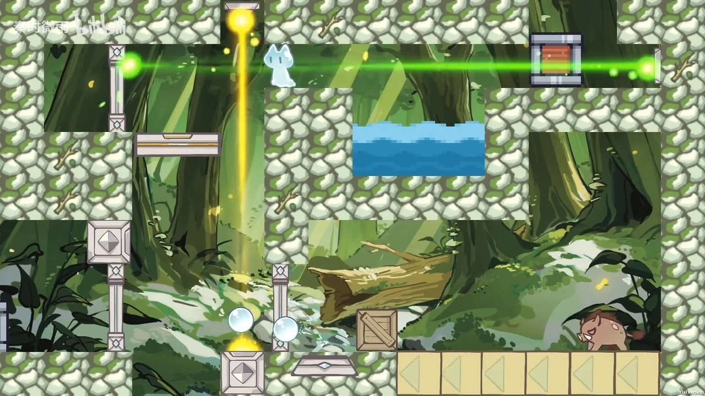
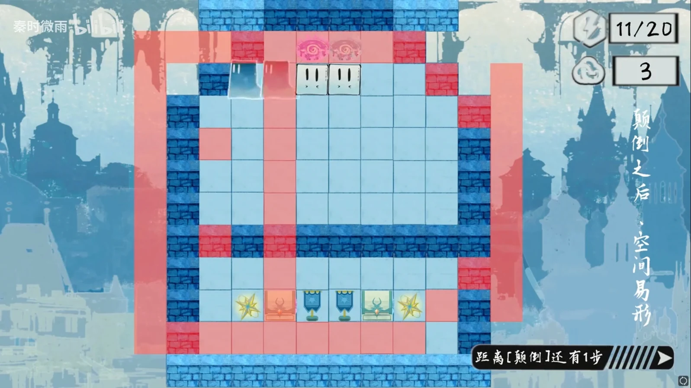
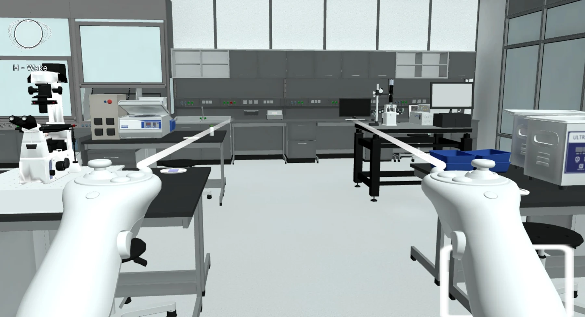
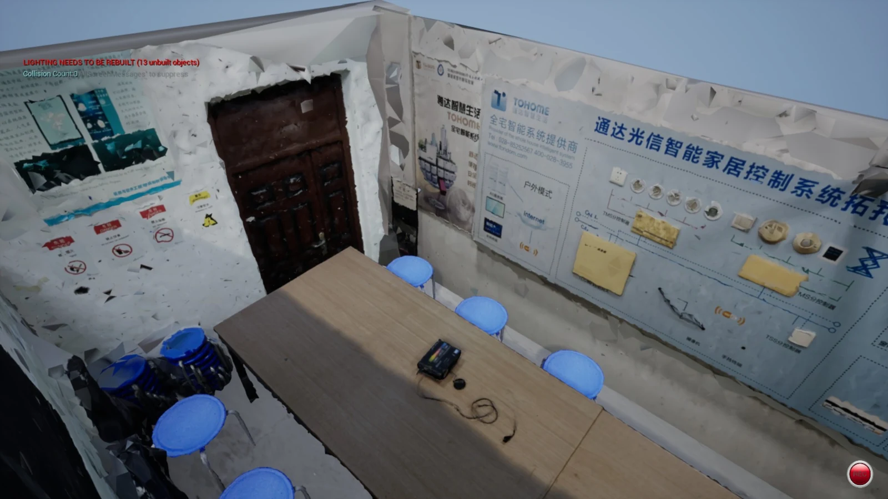
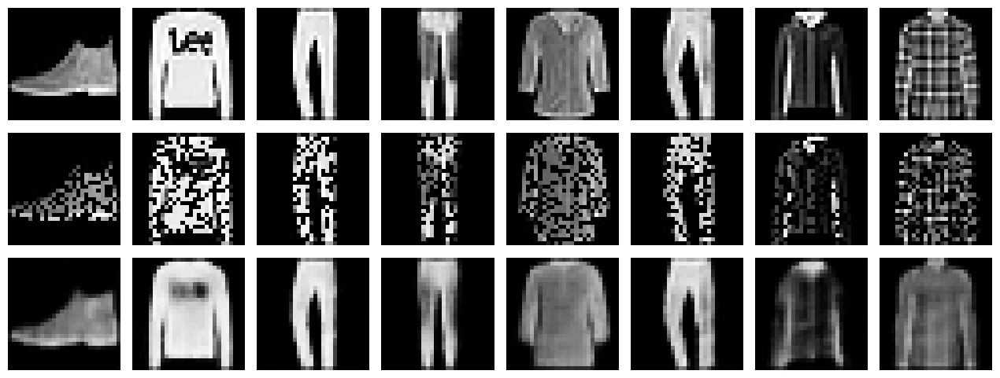
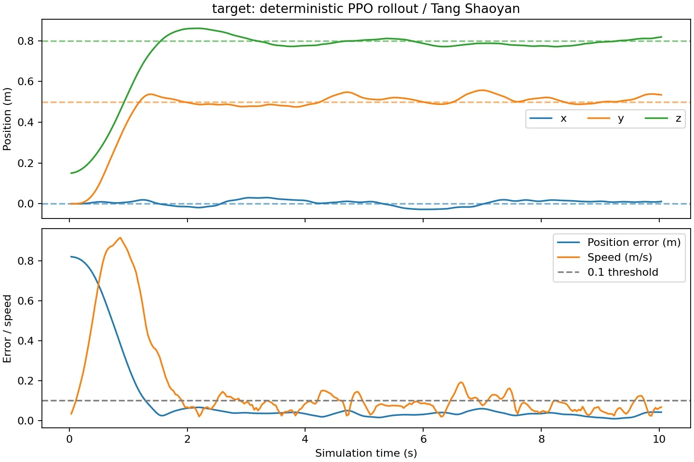

01Game Design / Unity 2D2024.10—2024.11
水滴环游记
把水的三态变化变成玩家的行动语言：同一片空间，因为能力与资源的不同，出现不同的走法。
Game systems · Interactive worlds · AI
我是唐劭岩，也叫硕糖。
目前在 NUS 学习计算机工程。
从玩法与交互出发，探索三维仿真、计算成像与 AI 应用，把复杂规则做成可以体验的世界。


设计可玩的系统，
构建可探索的世界。
游戏、虚拟实验与三维场景。
四个入口，一条设计与实现的主线。
把水的三态变化变成玩家的行动语言：同一片空间，因为能力与资源的不同，出现不同的走法。
在推箱解谜中加入灵体、实体与多实体同步控制，让一次输入成为一组需要提前安排的行动。

Interactive Simulation把仪器操作、成像概念和 AI 引导连接起来，让显微镜从一台复杂设备，变成可以操作和探索的虚拟实验。

Undergraduate Coursework贯穿三个阶段的课程实践：从照片采集与摄影测量，走向 NeRF 结果展示，再把重建资产带入仿真环境。
从角色状态与资源配置，
到可玩原型和可维护的工具。
为艾薇塔活动快速搭建推箱子 Demo，并为少前 2 联动局外活动制作文本自动化配置工具。
使用 Lua 与 UE 原生蓝图配置血姬行为状态机，参与商业化资源配置与效果验收。
Computer Engineering 硕士在读。预计 2028 年 2 月毕业。
课程实验中的实现、对照与反思。

从 NumPy 梯度检查到 PyTorch 去噪自编码器，比较重建、噪声泛化与压缩表征之间的取舍。
阅读实验笔记
在仿真任务中探索 PPO 控制、CBF 安全过滤与部分可观测决策，分别观察目标达成、记忆和约束的作用。
阅读实验笔记我喜欢把规则、反馈与实现连起来：做可玩的关卡、可探索的虚拟实验，也做让内容生产更容易维护的工具。
本科就读于电子科技大学软件工程专业，目前在新加坡国立大学学习计算机工程。设计之外，也喜欢摄影与音乐。